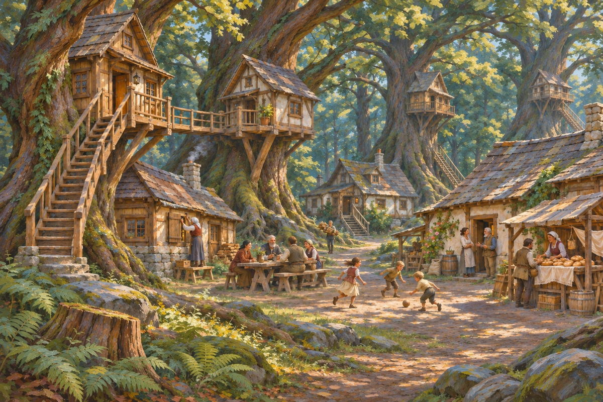
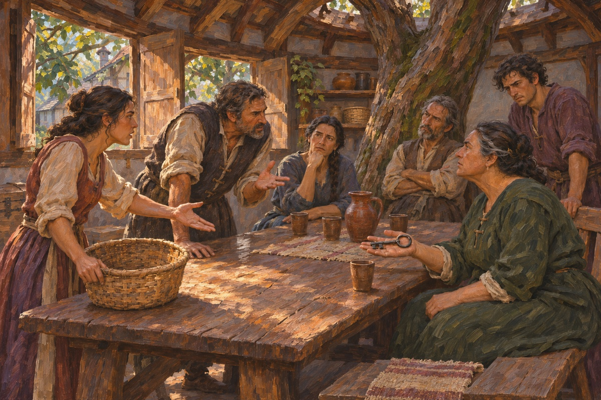
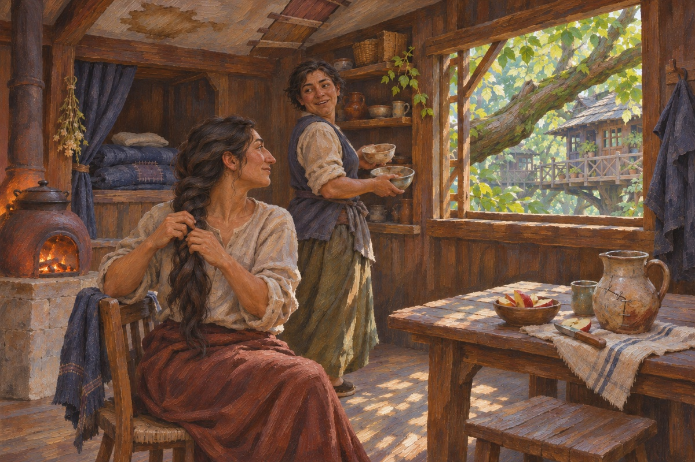
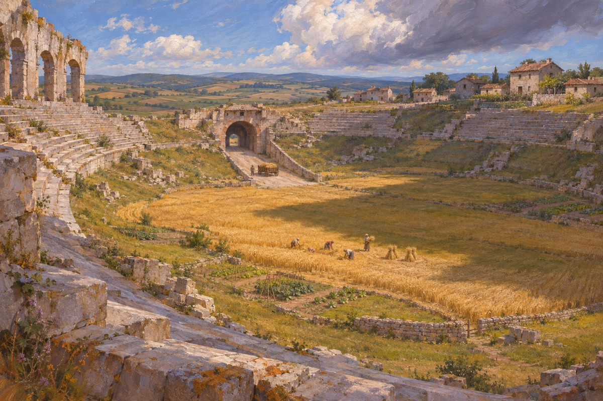

Download my notes ↓ Leave a reaction or a note under any painting. These choices are review notes, not canon decisions.

A settled human community lives both among the roots and above them. Homes, shared paths and a central gathering place make this a village with an ordinary social life.
Earlier brushwork ↗
Does this feel like a Genesis village, and which parts of the architecture are worth developing?
Your reaction Not reviewed Favourite Keep exploring Revise Pass Notes

A disagreement over winter stores brings neighbours into the village's common room. Genesis has negotiation and competing needs as well as a relationship with nature.
Earlier brushwork ↗
Does this kind of social tension belong in Genesis, and does the room feel distinctly theirs?
Your reaction Not reviewed Favourite Keep exploring Revise Pass Notes

An ordinary morning inside a home in the canopy. A lived-in room tests Genesis through domestic life rather than wilderness alone.
Earlier brushwork ↗
Does this make life in the trees feel comfortable and believable without becoming too idyllic?
Your reaction Not reviewed Favourite Keep exploring Revise Pass Notes

An imperial arena has become a patchwork of small fields. The present uses the shape of the Empire without restoring its original purpose.
Is this a worthwhile piece of the lived landscape, and does the old/new scale feel right?
Your reaction Not reviewed Favourite Keep exploring Revise Pass Notes